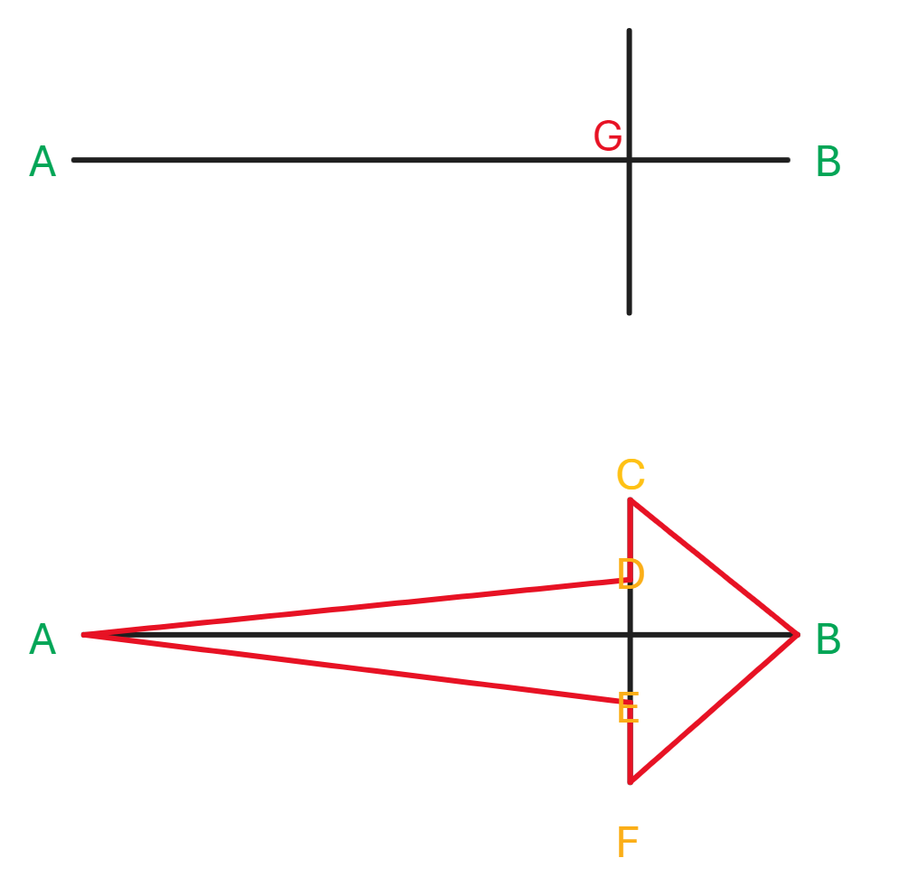
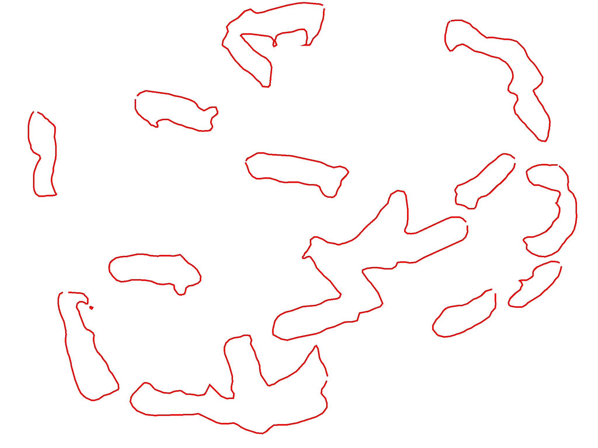
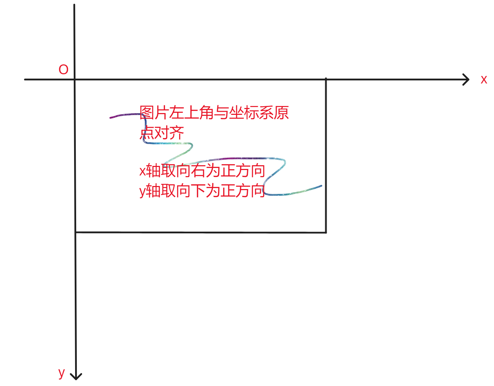
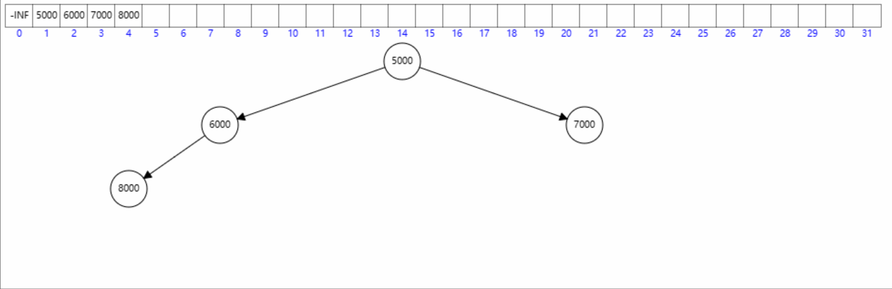

web前端机试题
时间：2.5小时，满分：120分
1、（35分）在 canvas画布 中绘制箭头。
要求如下：
- 禁止引入第三方工具库，请用原生的JS（JavaScript）实现。
- 按下鼠标左键（mousedown ）开始绘制箭头。
- 松开鼠标左键（mouseup ）结束箭头绘制。
- 箭头绘制的过程中要支持不同的方向变换。箭头边框规格： border: 2px solid red， 填充色： background-color:rgb(255,0,0,0.2) ， 图-101所示。
图-101
提示：
- 识别出箭头的关键点位，图-102 所示。
- mousedown 获取A点坐标。
- mouseup 获取B点坐标。
- 计算关键坐标点G（箭头头部占AB线段长度的百分比）。
- 计算出C点坐标（BG与BC夹角 45°，可通过三角函数计算C）。
- 计算出D点坐标（C点纵坐标偏移量）。
- 计算出F点坐标（BG与BF夹角 -45°，可通过三角函数计算F）。
- 计算出E点坐标（F点纵坐标偏移量）。
- 连通 A->D->C->B->F->E->A 得到箭头。

图-102
请在 ./out1/NO.1.html 文件中完成作答。
2、（25分）根据给定的坐标绘制物体轮廓。
要求如下：
- 禁止引入第三方工具库，请用原生的JS（JavaScript）实现。
- 给定需要标记的图片 ./out2/Mark.jpg ，图-201 所示。
- 给定标定数据 ./out2/Mark.json ，坐标点的连通域 图-202 所示。数据格式伪代码如下：
-
{ "version": "1.1",//数据版本号 "flags": {}, "shapes": [ {//第1个不规则图形坐标点位信息 "label": "", "points": [ [//第1个坐标点 1121,//x坐标 1288//y坐标 ], [//第2个坐标点 1114, 1263 ], ..., [//第n个坐标点 ] ], "group_id": null, "shape_type": "polygon", "flags": {} }, {}//第2个不规则图形坐标点位信息 ..., {}//第n个不规则图形坐标点位信息 ] - 标定数据的坐标点需要与图片对齐。取图片左上角为坐标原点，x轴取向右为正方向，y轴取向下为正方向。图-203 所示。
- 将标定数据绘制到给定的图片上。最终效果应如 图-204 所示。
图-201

图-202

图-203

图-204
请在 ./out2/NO.2.html 文件中完成作答。
3、（10分）获取远端的数据并展示。
要求如下：
- 禁止引入第三方工具库，请用原生的JS（JavaScript）实现。
- 请用原生JS写一个http请求调用远端数据的工具类，需要考虑到不同http状态码的处理。
- 使用该工具类，设计一个帖子列表和详情页，并实现数据的动态加载。
- 帖子列表接口：https://jsonplaceholder.typicode.com/posts
- 跟帖评论接口：https://jsonplaceholder.typicode.com/comments?postId=${postId}
- 请自行完成页面样式设计、以及交互（禁止引入UI框架）。
请在 ./out3/NO.3.html 文件中完成作答。
4、（10分）告警数据合并。
要求如下：
- 给定告警数据 ./out4/Alarm.json。
- 同组织，同养户，且告警时间三分钟内的告警数据进行合并展示。表-401 背景高亮的数据应进行合并。
- 请自行设计合并的展示方式与样式（禁止引入UI框架）。
| 序号 | 组织名称 | 养户名称 | 告警内容 | 告警时间 |
|---|---|---|---|---|
| 1 | 西南公司 | 张三 | 生物入侵 | 2024-04-20 19:04:01 |
| 2 | 西南公司 | 张三 | 生物入侵 | 2024-04-20 19:04:10 |
| 3 | 华北公司 | 张三 | 生物入侵 | 2024-04-20 19:04:12 |
| 4 | 西南公司 | 张三 | 生物入侵 | 2024-04-20 19:04:15 |
| 5 | 西南公司 | 张三 | 生物入侵 | 2024-04-20 19:05:30 |
| 6 | 西南公司 | 张三 | 生物入侵 | 2024-04-20 19:08:33 |
| 7 | 西南公司 | 张三 | 生物入侵 | 2024-04-20 19:08:44 |
| 8 | 西南公司 | 张三 | 生物入侵 | 2024-04-20 19:08:55 |
| 9 | 西南公司 | 李四 | 生物入侵 | 2024-04-20 19:10:55 |
| 10 | 西南公司 | 李四 | 生物入侵 | 2024-04-20 19:10:58 |
| 11 | 西北公司 | 赵六 | 生物入侵 | 2024-04-20 19:15:01 |
| 12 | 西北公司 | 赵六 | 生物入侵 | 2024-04-20 19:15:11 |
| 13 | 西北公司 | 赵六 | 生物入侵 | 2024-04-20 19:20:01 |
表-401
请在 ./out4/NO.4.html 文件中完成作答。
5、附加题（40分）实现最小堆（小顶堆）的数据结构。
最小堆，是一种经过排序的完全二叉树，其中任一非终端节点的数据值均不大于其左子结点和右子结点的值。
要求如下：
- 给定数据：5000,6000,7000,8000,4000,3000,2000,1000
- 需实现堆中排序：1000,2000,3000,5000,6000,7000,4000,8000
- 插入 5000,6000,7000,8000 图-501 所示。
- 插入 4000,3000,2000,1000 图-502 所示。

图-501

图-502